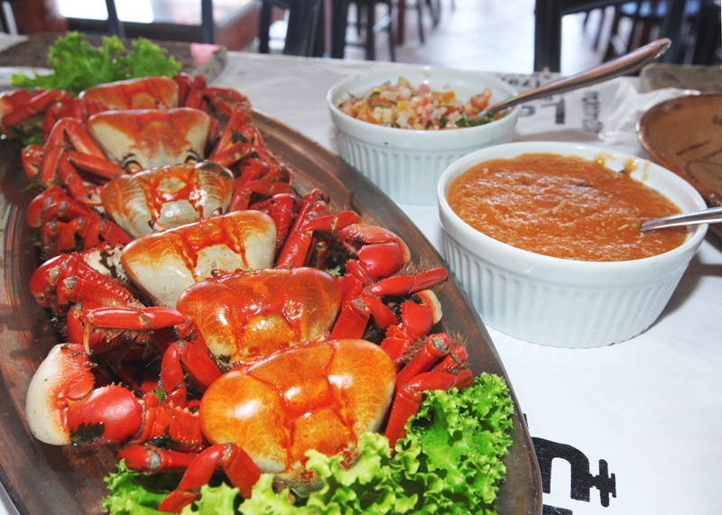
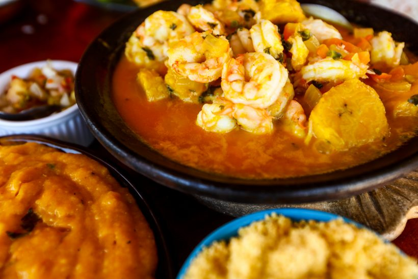

Home
Quem Somos
Cardápio
Pedidos
Fale Conosco
Tapioca
A Tapioca é uma ótima opção para quem procura um alimento saudável, versátil e com baixo índice glicêmico
R$ 7,00
Bolo de Rolo
Semelhante ao de um rocambole, mas com camadas ainda mais finas e delicadas e recheio de goiabada
R$ 20,00
Caranguejada
Feito com caranguejos cozidos em molho preparado com leite de coco, azeite e temperos verdes
R$ 28,00

Moqueca
Cozido de peixes, preparado junto com outros frutos do mar e outros temperos (dentre eles o leite de coco e o azeite de dendê)
R$ 28,00
